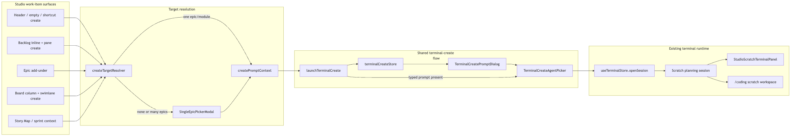
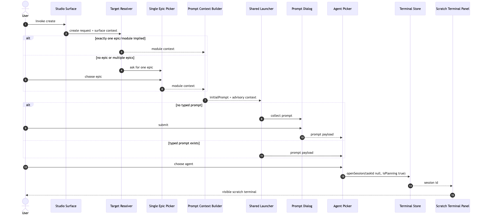
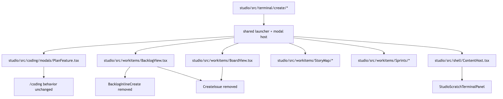

Change Map
Click a highlighted file group for its exact responsibility. New shared terminal-create code is isolated under the terminal module; work-item surfaces only resolve context and request launch.
Contracts
The implementation boundary is small: surfaces provide intent, the launcher owns modal/terminal mechanics, the agent owns actual issue creation.
TerminalCreateRequest
Project id, one module id, optional typed prompt, source surface, and advisory context lines.
CreateTarget
Exactly one epic/module before launch. If none or many are possible, the single-select epic picker must run first.
openSession
The shared agent picker opens taskId: null, ticketSeq: null, isPlanning: true.
Clickable Flow
Click a node to inspect what it owns. Dashed stroke marks a seam where later stories can split code without changing behavior.
Rendered Diagrams
Generated with mermaid-cli from source files in assets/.
Component topology

Create sequence

File map diagram

Target And Prompt Rules
These rules are the product contract from the planning discussion.
| Case | Target behavior | Prompt behavior | Forbidden |
|---|---|---|---|
| Exactly one selected epic | Use that module directly. | Include selected epic name/key. | Do not show picker. |
| Multiple or zero selected epics | Show single-select epic picker. | Continue only after one epic is picked. | Do not ask the agent to guess the epic before launch. |
| Add-under epic header | Parent epic is the module. | Include "create under epic". | Do not allow add-under for No Epic. |
| Add-under work item | Resolve owning epic from parent tree. | Include parent key/title as advisory context. | Do not write parent_id directly. |
| Board column/swimlane | Use lane epic if one exists; otherwise picker. | Include column state and lane context. | Do not write state_id directly. |
| Sprint or Story Map cell | Resolve one epic/module from cell or picker. | Include sprint row/cell context. | Do not write sprint_id directly. |
| Typed inline text | Use resolved module. | Text becomes initial prompt; skip prompt dialog. | Do not POST create API. |
| Button/shortcut with no text | Use resolved module. | Show prompt dialog, then agent picker. | Do not skip agent picker. |
Surface Mapping
Every current Studio create entry either launches terminal-create or disappears when it has no valid parent epic.
| Story | Surface | Implementation note | Refresh |
|---|---|---|---|
| CODIN-839 | Shared launcher | Extract neutral terminal-create host and keep /coding plan behavior unchanged. | existing |
| CODIN-840 | Normal Studio create | Route buttons/shortcuts/empty states through target resolver and single picker. | refresh after run activity |
| CODIN-841 | Backlog inline, pane, add-under, drawer subtask add | Text is prompt; parent context is advisory; no direct create fallback remains. | refresh only |
| CODIN-842 | Board column and swimlane create | Column state and lane epic become context text; lane-less paths pick one epic. | refresh only |
| CODIN-843 | Story Map and sprint contexts | Cell/sprint context is prompt text; sprint assignment is left to the agent. | refresh only |
| CODIN-844 | Cleanup | Delete stale direct-create components/actions/tests after replacement tests pass. | search gate |
Test Plan
Tests assert launch mechanics, not agent output. The agent may create zero, one, or many issues in the terminal session.
| Layer | Test | Assertion |
|---|---|---|
| Unit | targetResolver | one epic skips picker; multi/none requires picker; parent without owning epic blocks add-under. |
| Unit | promptContext | parent/state/sprint/story-map data is serialized as advisory text only. |
| Component | Terminal create host | empty prompt opens PromptDialog then AgentPicker; typed prompt opens AgentPicker directly. |
| Component | Backlog/Board create paths | No api.createWorkItem call; openSession receives scratch planning args. |
| Regression | /coding plan flow | n still opens the same prompt/agent/scratch flow and selects the scratch terminal workspace. |
| Search gate | Direct create leftovers | No Studio create affordance imports CreateIssue or calls createIssue. |
Build Order
The sequence matches the created stories and keeps behavior verifiable after each slice.